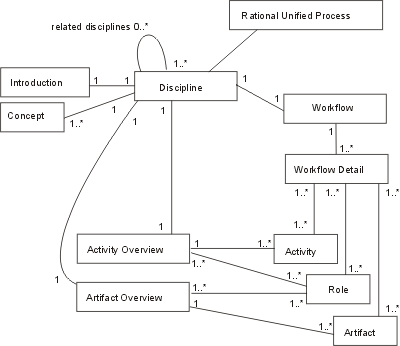
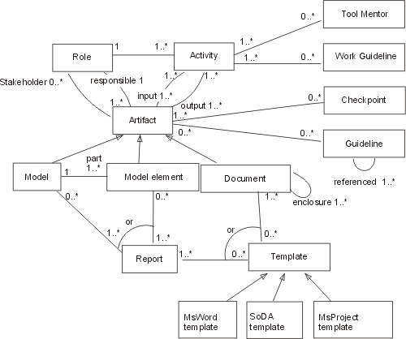
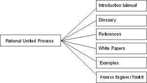

Concepts: The Underlying
Model of the Rational Unified Process
This is a description of the underlying model, sometimes called a meta-model,
of the Rational Unified Process (RUP). For an introduction to the basic concepts
of the RUP, see the Overview.
Below, we present three diagrams to make it easier to understand how
the various elements of the process are related. The first diagram describes
a high level view of the RUP, with process
elements such as disciplines, workflow details, and how they are related
with roles, activities, and artifacts. The second diagram presents a more
detailed view of the process. It describes process elements, such
as roles, their activities, artifacts (with related information), and
their interrelationships. The third diagram shows some miscellaneous information
that can be viewed as attributes of the RUP as a
whole.
Topics
- A discipline shows all activities you might
go through to produce a particular set of artifacts. These disciplines
are described at an overview level—a summary of all roles, activities,
and artifacts that are involved. At a more detailed level, we show how
roles collaborate to use and produce artifacts. The steps at this detailed
level are called workflow details.
- Each discipline has an introduction.
- To be able to understand a discipline, there are certain concepts
you need to understand.
- Each discipline has an activity overview.
- Each discipline has an artifact overview.
- Each disicpline has one diagram showing the workflow of the
disicpline, expressed in terms of workflow details. The primary
purpose of a workflow detail is to describe how activities are performed
in reality. Normally, several activities are performed together. Workflow
details are groupings of activities that are done together, presented
with input and resulting artifacts. The workflow details are not necessarily
performed in sequence and you may alternate between them during an iteration.

- A role is a grouping mechanism that defines a set of responsibilities
in terms of activities that this role can perform. A role may be performed
by an individual or a set of individuals working together as a team.
An individual may also assume multiple roles. Sometimes a role may relate
directly to an individual's job title, but it does not have to.
- An activity is a unit of work a role may be asked
to perform. An activity is described by it's steps and input and output
artifacts.
- Artifacts are the modeling constructs and documents
that activities evolve, maintain or use as input. An artifact can be
any of the following:
- A document, such as Business Case or Software Architecture
Document
- A model, such as the Use-Case Model or the Design
Model
- A model element, that is, an element within a model
such as a class or a subsystem.
- The artifacts have checkpoints associated with them that are
used when performing review activities.
- Models and model elements have reports associated with them.
A report extracts information about models and model elements from a
tool. A report presents an artifact or a set of artifacts.
- There are a number of ready-to-use templates that present documents
and artifacts. The RUP provides templates to use
with Microsoft Word, FrameMaker, and Microsoft Project.
- Most activities in the RUP are supported by software-engineering
tools. For many activities, there are one or several tool mentors
that describes how to use the tools in the Rational tool suite
- For most artifacts, the RUP provides guidelines
with detailed information about the artifact.
- The RUP provides work guidelines with
practical information about how to perform certain tasks, such as workshops
and reviews. These work guidelines are referenced from activity descriptions
as shown in this figure.

There are some additional items in the RUP.
- An Introduction Manual that introduces the RUP and gives an overview of all concepts.
- A glossary of all terms used in the RUP.
- References to external sources.
- White Papers that detail various topics related to the RUP.
- Examples of artifacts are provided through sample projects
- The Process Engineer Toolkit provides supporting guidelines
configuring a process

Copyright
© 1987 - 2001 Rational Software Corporation
| |

|
 Disciplines >
Disciplines >
 Environment >
Environment >
 Concepts >
Concepts >